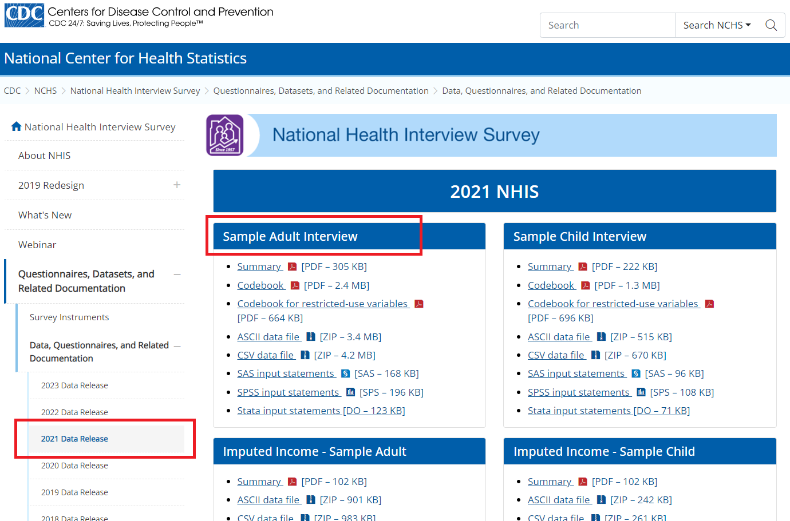
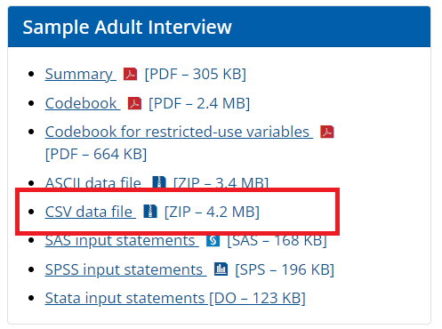
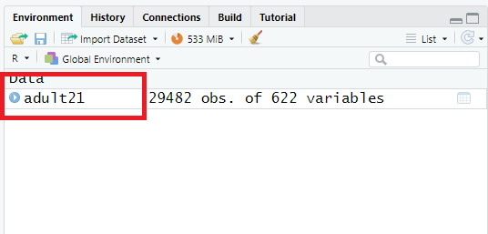
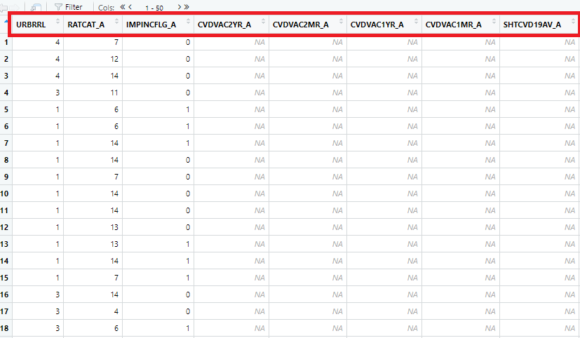
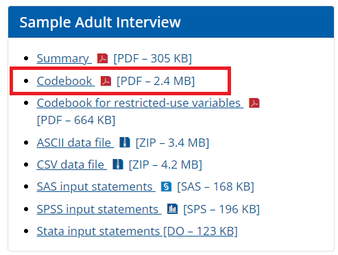
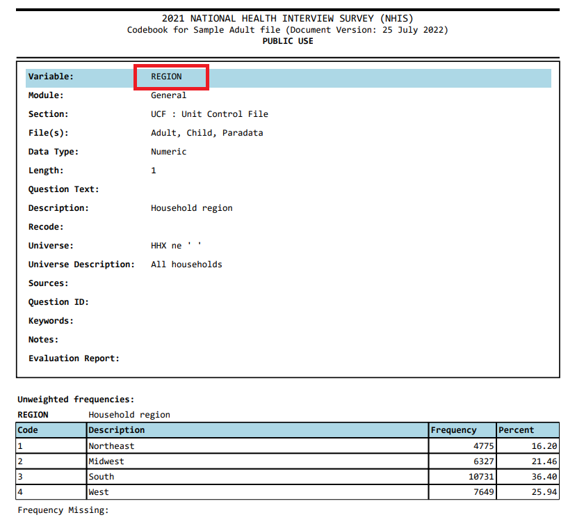
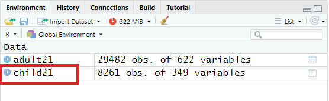
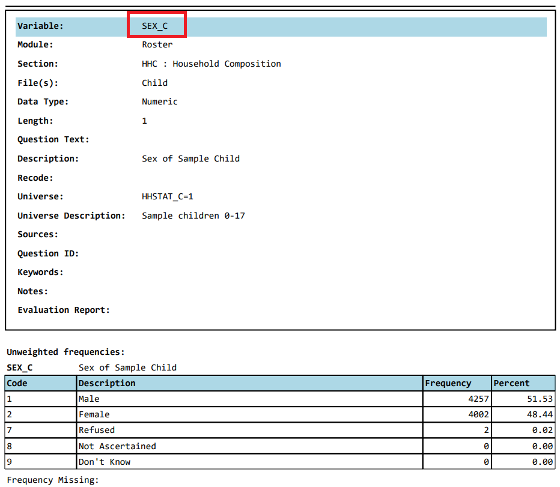
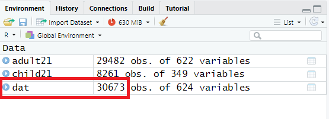

Importing NHIS to R
This tutorial provides instructions on accessing the National Health Interview Survey (NHIS) dataset from the US Centers for Disease Control and Prevention (CDC) website and importing it into the RStudio environment.
NHIS datafile and documents
The NHIS files are stored in the NHIS website in different formats. You can import this data in any statistical package that supports these file formats, e.g., ASCII, CSV, SAS.
In the recent NHIS (2019 or later), data are available in 5 categories:
- Interview data for adults
- Interview data for children
- Imputed income for adults
- Imputed income for children
- Paradata
In the earlier NHIS (before 2019), data are available in 8 categories:
- Family file
- Household file
- Person file
- Child file
- Adult file
- Imputed income
- Functioning and disability
- Paradata
Combining data
Different cycles
It is possible to combine datasets from different years/cycles together in NHIS. Similar to NHANES, identification of the same person in NHIS across different cycles is not possible in the public release datasets. For appending data from different cycles, please make sure that the variable names/labels are the same/identical in years under consideration (in some years, names and labels do change).
Within the same cycle
Within NHIS datasets in a given cycle, each sampled person has a household number (HHX), family number (FMX), and a person number within family (FPX). We can create a unique identifier based on these three variables and merge the datasets.
Accessing NHIS Data
NHIS survey datasets are publicly available at https://www.cdc.gov/nchs/nhis/
Unlike NHANES where a R package is available to download the dataset, NHIS datasets need to be downloaded directly from the CDC website. In the following example, we will see how to download ‘Adult’ data from 2021 NHIS, and check associated variable in that dataset.
- Step 1: Say, for example, we are interested to download the adult dataset in the CSV format:

- Step 2: We can download the data in the local PC folder, unzip it, and then read the data into R as as follows:
-
Step 3: Once data is imported in RStudio, we will see the
adult21object listed under data window (see below):

-
Step 4: We can check the variable names in this
adult21dataset using thenamesfunction.
-
Step 5: We can check how many unique adults are in this
adult21dataset. Note that theHHXvariable in the dataset is the unique household identifier, where only one adult per household was selected for interview. We can use thisHHXvariable to merge adult datafile with other datafiles (e.g., child data).
-
Step 6: We can open the data in RStudio in the dataview window (by clicking the
adult21data from the data window). The next Figure shows only a few columns and rows from this large dataset. Note that there are some values marked as “NA”, which represents missing values.

- Step 7: To understand what the column names mean in this Figure, we need to take a look at the codebook, which is also available on the CDC website:

-
Step 8: We can see a check for the column or variables, e.g.,
REGION, in the codebook:

-
Step 9: We can assess if the numbers reported under count matches with what we get from the
adult21data we just imported (particularly, for theREGIONvariable):
Similarly, we can download the child data and open it in R:

Let’s check how many unique children are in this child21 dataset:
Now let’s check for the column or variables, e.g., SEX_C, in the codebook:

We can assess if the numbers reported under count matches with what we get from the child21 data we just imported:
Merging within the same cycle
Note
We can use HHX variable to merge different datafiles within the same survey cycle.
As mentioned earlier, HHX variable in the dataset is the unique household identifier. We can use this HHX variable to merge different datafiles within the same survey cycle. Say, we are interested in merging child age (AGEP_C) and sex (SEX_C) variables with the adult datafile. We can use the merge function as follows:

As we can see, there are data from 30,673 unique households, suggesting that not all children are sampled from the same household of sampled adults.
Table 1
Now we will use the adult21 dataset to create Table 1 with utilizing survey features (i.e., psu, strata, and weights). For that, let us create/recode some variables:
In a following chapter about survey data analysis, we will explain what these survey features mean.
# Heart attack
adult21$heart.attack <- car::recode(adult21$MIEV_A, " 2 = 'No'; 1 = 'Yes'; else = NA",
levels = c("No", "Yes"), as.factor = T)
table(adult21$heart.attack, useNA = "always")
#>
#> No Yes <NA>
#> 28378 1078 26
# Diabetes
adult21$diabetes <- car::recode(adult21$DIBEV_A, " 2 = 'No'; 1 = 'Yes'; else = NA",
levels = c("No", "Yes"), as.factor = T)
table(adult21$diabetes, useNA = "always")
#>
#> No Yes <NA>
#> 26318 3134 30
# Sex
adult21$sex <- car::recode(adult21$SEX_A, " '1'='Male'; '2'='Female'; else=NA",
levels = c("Female", "Male"), as.factor = T)
table(adult21$sex, useNA = "always")
#>
#> Female Male <NA>
#> 16102 13378 2
# Pseudo-PSU
adult21$psu <- adult21$PPSU
adult21$psu <- as.factor(adult21$psu)
table(adult21$psu, useNA = "always")
#>
#> 1 2 3 4 5 6 7 8 9 10 11 12 13 14 15 16
#> 1952 1599 1141 792 669 461 549 662 629 840 521 359 491 421 405 346
#> 17 18 19 20 21 22 23 24 25 26 27 28 29 30 31 32
#> 156 221 348 531 596 656 588 593 383 647 374 294 218 57 310 334
#> 33 34 35 36 37 38 39 40 41 42 43 44 45 46 47 48
#> 269 369 410 447 180 279 263 85 70 208 175 224 302 270 396 376
#> 49 50 51 52 53 54 55 56 57 58 59 60 61 62 63 64
#> 202 240 303 253 349 249 75 67 257 203 234 327 410 364 252 247
#> 65 66 67 68 72 73 74 75 76 77 78 79 80 81 82 87
#> 199 149 96 22 65 42 108 131 37 41 31 28 50 46 64 31
#> 89 90 91 92 93 97 98 99 100 101 102 103 104 108 109 110
#> 81 28 132 170 64 86 45 32 144 128 129 171 117 63 48 13
#> 114 127 128 134 139 140 150 151 152 153 <NA>
#> 54 44 10 29 69 18 46 50 49 24 0
# Pseudo-stratum
adult21$strata <- adult21$PSTRAT
adult21$strata <- as.factor(adult21$strata)
table(adult21$strata, useNA = "always")
#>
#> 100 101 102 103 104 105 106 107 108 109 110 111 112 113 114 115
#> 736 714 589 480 499 605 733 748 757 629 623 614 158 914 386 603
#> 116 117 118 119 120 121 122 123 124 125 126 127 128 129 130 131
#> 192 678 661 842 549 510 606 306 517 385 633 418 265 801 449 558
#> 132 133 134 135 136 137 138 139 140 141 142 143 144 145 146 147
#> 558 563 434 532 595 576 494 370 644 485 460 738 625 368 412 650
#> 148 149 150 151 <NA>
#> 672 531 556 1061 0
# Sampling weight
adult21$sweight <- adult21$WTFA
summary(adult21$sweight)
#> Min. 1st Qu. Median Mean 3rd Qu. Max.
#> 793.2 4698.3 7402.6 8586.9 10671.1 71378.0
# Drop the missing values associated with Heart attack, Diabetes, Sex
dat.analytic <- adult21[complete.cases(adult21$heart.attack),]
dat.analytic <- dat.analytic[complete.cases(dat.analytic$diabetes),]
dat.analytic <- dat.analytic[complete.cases(dat.analytic$sex),]
dim(dat.analytic)
#> [1] 29435 628First, we will create the survey design. Second, we will report Table 1 with heart attack and sex variable, stratified by diabetes.
library(tableone)
library(survey)
# Indicator in the full data
adult21$indicator <- 1
adult21$indicator[adult21$HHX %in% dat.analytic$HHX] <- 0
table(adult21$indicator)
#>
#> 0 1
#> 29435 47
# Survey design
w.design <- svydesign(id = ~psu, strata = ~strata, weights = ~sweight, data = adult21, nest = T)
# Subset
w.design0 <- subset(w.design, indicator == 0)
# Table 1
tab1 <- svyCreateTableOne(var = c("heart.attack", "sex"), strata= "diabetes",
data = w.design0, test = FALSE)
print(tab1)
#> Stratified by diabetes
#> No Yes
#> n 228524605.2 24325386.4
#> heart.attack = Yes (%) 5335722.7 ( 2.3) 2358175.6 ( 9.7)
#> sex = Male (%) 109610086.2 (48.0) 12510287.1 (51.4)Regression analysis
Let’s run a regression analysis with utilizing survey features.